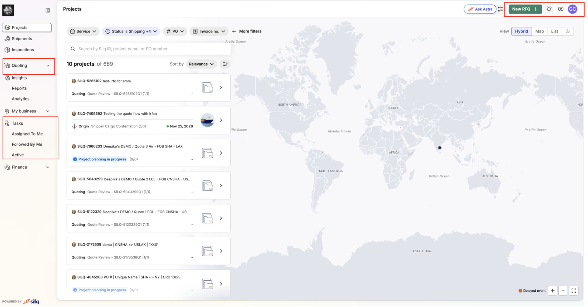
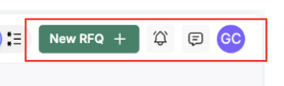
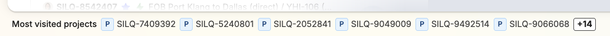

Client's Nav Bar : Release note
A simpler way to get around Silq App
We've redesigned the navigation in Silq App so you can find what you need with fewer clicks. Here's what's different.
A more organized menu
Projects, Shipments and Inspections are still at the top of the left-hand menu. The rest of the menu is now organized into groups of related pages:
- Quoting: Quotes and Bookings
- Insights: Reports and Analytics
- My business: Documents and Network
- Tasks: tasks assigned to you, tasks you follow, and all active tasks
- Finance: Invoices
Note: Each group can be expanded or collapsed. Expand a group to see and open the pages inside it. Collapse it to keep your menu short and show only the group names. Click a group name to switch between the two.

Common actions are now at the top of the page
Requesting a quote, checking notifications are now in a bar across the top of every page. You can reach them from anywhere in platform without scrolling.

Get back to your projects faster
A new bar at the bottom of the screen shows the projects you visit more often. Click any project/shipment ID to open it. If you have more projects than fit, click the number at the end of the bar to see the full list.
